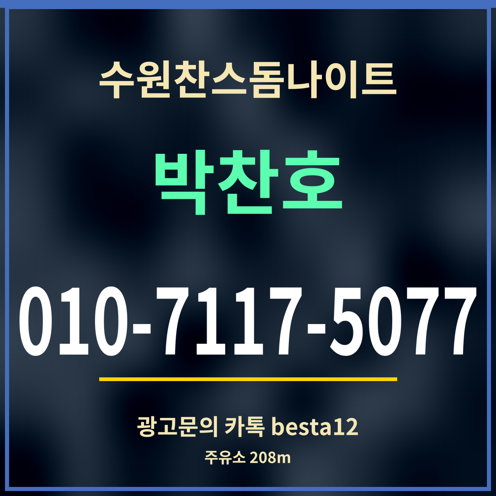

광고19세 미만 출입 금지
수원찬스돔나이트 근처 주유소 정리, 알뜰주유소 208m
주유소 출처: 카카오맵 검색 「권선동 주유소」 · 가격·영업시간은 목록에 없음

핵심 3줄: 가장 가까운 곳은 명품주유소(권선로 653 · 알뜰주유소)로 직선 208m입니다. 권선로 644(320m)와 경수대로 350(324m)에도 있습니다. 가게와 같은 권선로에 두 곳이 있습니다.
거리순 주유소
| 이름 | 브랜드 | 주소 | 거리 |
|---|---|---|---|
| 명품주유소 | 알뜰주유소 | 권선로 653 | 208m |
| 디오티디 수원힙스터주유소 | HD현대오일뱅크주유소 | 권선로 644 | 320m |
| 거창에너지 권선제일주유소 | S-OIL | 경수대로 350 | 324m |
| 효원주유소 | SK주유소 | 팔달구 효원로 181 | 584m |
| 경원주유소 | SK주유소 | 권광로 80 | 664m |
| 조은기름주유소 | S-OIL | 팔달구 인계로 76 | 955m |
| 오앤유에너지주유소 | SK주유소 | 팔달구 인계로 58 | 1,007m |
| 참좋은주유소 | S-OIL | 정조로 599 | 1,044m |
차로 올 때 순서
기름이 부족하다면 가게에 닿기 전 권선로에서 넣고 오는 것이 편합니다. 가게에는 카카오맵 기준 무료 주차가 표시되어 있습니다. 기름값과 영업시간은 목록에 없어 적지 않았으니 지도 앱이나 주유소 가격 안내에서 확인하세요.
무엇보다 술을 마실 계획이라면 차를 두고 오는 것이 가장 좋습니다. 차를 가져왔다면 돌아갈 때 대리운전을 부르거나 다음 날 찾으러 오세요. 수원찬스돔나이트 담당에게 주차 가능 시간을 먼저 물어 두면 편합니다.
전기차라면
전기차는 주유소보다 충전소가 더 가깝습니다. 카카오맵 검색으로 티스테이션 권선점 전기차충전소(권선로668번길 3)가 직선 81m, 수원나례가아파트 전기차충전소가 72m입니다. 아파트 안 충전소는 이용 조건이 있을 수 있어 확인이 필요합니다.
자주 묻는 것
가장 가까운 주유소는요?
명품주유소(권선로 653)로 직선 208m입니다.
기름값은 얼마인가요?
가격은 목록에 없어 적지 않았습니다.
주차는 되나요?
카카오맵에 무료 주차가 표시되어 있습니다.
한 줄 정리: 수원찬스돔나이트 208m 거리에 주유소 — 기름은 오는 길에, 술을 마시면 차는 두고.
새벽에 쉴 곳은 근처 찜질방을 보세요.
이 페이지는 광고이며, 업소 제공 정보를 받아 실었습니다(담당 박찬호). 확인일 2026-09-27.